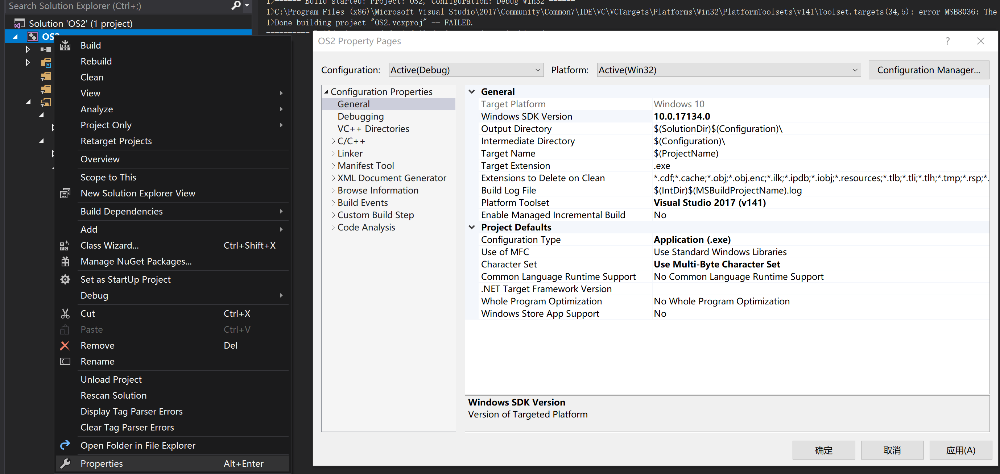
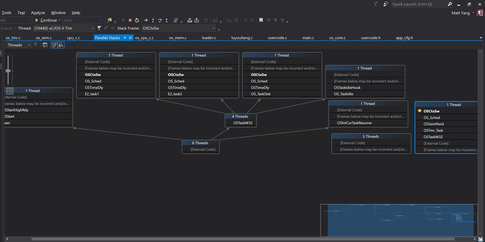

修改自Micrium官网适配给VS2017源码，加入卢有亮的《嵌入式实时操作系统μC/OS原理与实践》移植代码中的实验例子。
Windows SDK Version为可用的版本，比如10.0.17134.0
https://www.micrium.com/download/micrium_win32_kernel/
注意以下代码做了大量删改，仅保留主线部分
时间片依赖于定时器对响应代码的定期唤醒。
传统硬件平台的定时器来源是硬件定时器，软件模拟定时器来源是Windows Multimedia API提供的服务中的timeSetEvent。
Windows Multimedia API的入口在winmm.dll，因此工程环境应该引入这个动态库的依赖。
位于os_cpu_c.c中的OSInitHookBegin()
void OSInitHookBegin (void) { ... // 将OSTickW32绑定到一个线程上，并把线程ID写到OSTick_ThreadId OSTick_Thread = CreateThread(NULL, 0, OSTickW32, 0, CREATE_SUSPENDED, &OSTick_ThreadId); //在整个进程里这个线程能被最优先运行，时间片服务能够被及时运行 SetThreadPriority(OSTick_Thread, THREAD_PRIORITY_HIGHEST); //设定的OSTick_TimerCap应该大于等于winmm提供的最大时间精度（最小时间间隔） if (OSTick_TimerCap.wPeriodMin < WIN_MM_MIN_RES) { OSTick_TimerCap.wPeriodMin = WIN_MM_MIN_RES; } // 设置这个精度 timeBeginPeriod(OSTick_TimerCap.wPeriodMin)； // 创建事件，可以理解为通知，通过setEvent给等待这个事件/通知的线程设置为可运行 OSTick_SignalPtr = CreateEvent(NULL, TRUE, FALSE, NULL); // 设置循环定时触发的周期，精度，触发时操作OSTick_SignalPtr OSTick_TimerId = timeSetEvent((UINT )(1000u / OS_TICKS_PER_SEC), (UINT ) OSTick_TimerCap.wPeriodMin, (LPTIMECALLBACK) OSTick_SignalPtr, (DWORD_PTR ) NULL, (UINT )(TIME_PERIODIC | TIME_CALLBACK_EVENT_SET)); ... }
在上面的代码里，创建了OSTick_Thread，设置好了winmm提供的循环定时触发，定时触发的时间片服务函数等待的事件。
为了让OSTick_Thread能定时唤醒，OSTickW32()内应该有死循环以及等待OSTick_SignalPtr事件。
static DWORD WINAPI OSTickW32 (LPVOID p_arg) { CPU_BOOLEAN terminate; CPU_BOOLEAN suspended; HANDLE wait_signal[2]; CPU_SR_ALLOC(); // 等待OSTick_SignalPtr事件，以及等待系统终止的事件 wait_signal[0] = OSTerminate_SignalPtr; wait_signal[1] = OSTick_SignalPtr; terminate = DEF_FALSE; while (!terminate) { switch (WaitForMultipleObjects(2, wait_signal, FALSE, INFINITE)) { // OSTick_SignalPtr 触发了 case WAIT_OBJECT_0 + 1u: // 重置一下这个事件，为下次触发准备 ResetEvent(OSTick_SignalPtr); // 更改进程状态，关中断 CPU_CRITICAL_ENTER(); suspended = OSIntCurTaskSuspend(); // 完成时间片更新的一些事 if (suspended == DEF_TRUE) { OSIntEnter(); OSTimeTick(); OSIntExit(); OSIntCurTaskResume(); } CPU_CRITICAL_EXIT(); break; } } }
进程管理依赖于底层的上下文切换。
传统硬件平台的上下文切换基本是寄存器入栈备份现场，任务堆栈出栈还原现场。
这里的上下文切换，依赖于操作系统提供的进程内线程切换，线程切换自带了上下文切换。
为了把μC/OS内的进程给操作系统作为线程管理，需要包装一下。
typedef struct os_task_stk { void *TaskArgPtr; /* Task 参数数组指针 */ INT16U TaskOpt; /* Task 选项 */ void (*Task)(void*); /* Task 函数入口 */ HANDLE ThreadHandle; /* Task 线程的句柄 */ DWORD ThreadID; /* Task 线程的线程ID */ volatile OS_TASK_STATE TaskState; /* Task 线程的状态 */ HANDLE SignalPtr; /* Task 线程的同步 信号 */ HANDLE InitSignalPtr; /* Task 线程的创建 信号 */ CPU_BOOLEAN Terminate; /* Task 线程的结束 标志 */ OS_TCB *OSTCBPtr; /* Task TCB指针 */ } OS_TASK_STK;
在这个数据结构里，存储TCB外包装的线程各种信息，由于这些信息存储在它的任务堆栈里，它的赋初值在TCB初始化的任务堆栈初始化里完成。
OS_STK *OSTaskStkInit (void (*task)(void *pd), void *p_arg, OS_STK *ptos, INT16U opt) { OS_TASK_STK *p_stk; /* Load stack pointer */ p_stk = (OS_TASK_STK *)((char *)ptos - sizeof(OS_TASK_STK)); p_stk->TaskArgPtr = p_arg; p_stk->TaskOpt = opt; p_stk->Task = task; p_stk->ThreadHandle = NULL; p_stk->ThreadID = 0u; p_stk->TaskState = STATE_NONE; p_stk->SignalPtr = NULL; p_stk->InitSignalPtr = NULL; p_stk->Terminate = DEF_FALSE; p_stk->OSTCBPtr = NULL; return ((OS_STK *)p_stk); }
在OSTaskStkInit()随后执行的OS_TCBInit()里，借助OSTCBInitHook(ptcb);里完成对该task的外包装进一步初始化。
void OSTCBInitHook (OS_TCB *p_tcb) { OS_TASK_STK *p_stk; p_stk = (OS_TASK_STK *)p_tcb->OSTCBStkPtr; // Task 线程的同步信号，实际上切换到这个任务的线程就是靠这个事件通知的 p_stk->SignalPtr = CreateEvent(NULL, FALSE, FALSE, NULL); // Task 线程的创建完成信号， p_stk->InitSignalPtr = CreateEvent(NULL, TRUE, FALSE, NULL); // Task 线程的句柄，把OSTaskW32这个任务包装函数绑定到线程 p_stk->ThreadHandle = CreateThread(NULL, 0, OSTaskW32, p_tcb, CREATE_SUSPENDED, &p_stk->ThreadID); // 设置以下当前状态，创建完毕但还没运行过 p_stk->TaskState = STATE_CREATED; p_stk->OSTCBPtr = p_tcb; }
还差一点，task的内部函数就可以开始运行了。在任务调度开始之后，完成下面的这一点工作。
顺序为：OSTCBInitHook()->OSCtxSw()->OSTaskW32()->OSCtxSw()->OSTaskW32()->END
static DWORD WINAPI OSTaskW32 (LPVOID p_arg) { OS_TASK_STK *p_stk; OS_TCB *p_tcb; p_tcb = (OS_TCB *)p_arg; p_stk = (OS_TASK_STK *)p_tcb->OSTCBStkPtr; // 等待task被首次被调度到，等到了再往后执行 // 这个等待，使得回到前面执行OSCtxSw的线程上 p_stk->TaskState = STATE_SUSPENDED; WaitForSingleObject(p_stk->SignalPtr, INFINITE); // 给线程设置个名字，便于IDE调试 OSSetThreadName(p_stk->ThreadID, p_tcb->OSTCBTaskName); // 等待到了，标记任务已经初始化完毕，准备好被正式调度了 p_stk->TaskState = STATE_RUNNING; SetEvent(p_stk->InitSignalPtr); // 执行task的函数 p_stk->Task(p_stk->TaskArgPtr); // 如果上面的函数执行完毕返回了，就要删除自己 OSTaskDel(p_tcb->OSTCBPrio); return (0u); }
void OSCtxSw (void) { OS_TASK_STK *p_stk; OS_TASK_STK *p_stk_new; CPU_SR_ALLOC(); p_stk = (OS_TASK_STK *)OSTCBCur->OSTCBStkPtr; OSTaskSwHook(); OSTCBCur = OSTCBHighRdy; OSPrioCur = OSPrioHighRdy; // 当前的老任务状态位改为挂起，但是没有入栈这个操作，因为保存上下文由做线程切换的操作系统完成 if (p_stk->TaskState == STATE_RUNNING) { p_stk->TaskState = STATE_SUSPENDED; } p_stk_new = (OS_TASK_STK *)OSTCBHighRdy->OSTCBStkPtr; switch (p_stk_new->TaskState) { case STATE_CREATED: // 刚创建好，需要OSTaskW32()来进一步初始化 ResumeThread(p_stk_new->ThreadHandle); // 等待这个任务的初始化完毕的事件，然后设置SignalPtr这个事件使得这个task的线程处于就绪 // 原型：SignalObjectAndWait(hObjectToSignal, hObjectToWaitOn, dwMilliseconds, bAlertable); SignalObjectAndWait(p_stk_new->SignalPtr, p_stk_new->InitSignalPtr, INFINITE, FALSE); break; case STATE_SUSPENDED: // 设置SignalPtr这个事件，这个task的线程处于就绪 p_stk_new->TaskState = STATE_RUNNING; SetEvent(p_stk_new->SignalPtr); break; case STATE_INTERRUPTED: p_stk_new->TaskState = STATE_RUNNING; ResumeThread(p_stk_new->ThreadHandle); break; default: return; } if (p_stk->Terminate == DEF_TRUE) { OSTaskTerminate(p_stk); CPU_CRITICAL_EXIT(); /* ExitThread() never returns. */ ExitThread(0u); return; } CPU_CRITICAL_EXIT(); // 究竟是谁在等待SignalPtr这个事件，难道不是做一些切换的事情吗 WaitForSingleObject(p_stk->SignalPtr, INFINITE); CPU_CRITICAL_ENTER(); }
线程切换肯定是把控制权给等待这个型号的线程，自己等自己是为什么呢？
于是看了下线程的函数调用堆栈：

这是在等其他线程，设置自己线程的SignalPtr，让自己线程继续运行。